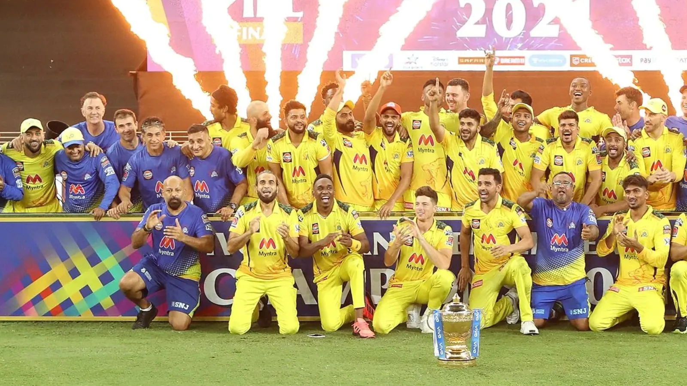
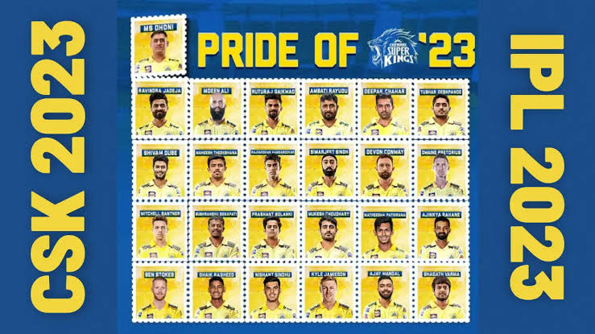

ABOUT US
CHENNAI SUPER KINGS
Welcome to the Home of Chennai Super Kings CSK

Welcome to the official website of the Chennai Super Kings,
the pride of Indian cricket and one of the most successful franchises in the history of the Indian Premier League (IPL).
Here, you'll find everything you need to know about our team, our history, and our commitment to excellence in the world of cricket.
Our Legacy
Founded in 2008, Chennai Super Kings has been a dominant force in the IPL from the very beginning.
With a strong focus on teamwork, consistency, and sportsmanship, we have won multiple IPL championships and earned the unwavering
support of millions of fans worldwide.
The Yellow Brigade
The CSK family is more than just a cricket team; it's a way of life. Our fans, affectionately known as the "Yellow Brigade," are the heartbeat of our franchise.
They've stood by us through thick and thin, turning every stadium into a sea of yellow. Discover the passion and pride that define CSK fans.
Our Captain

Meet the charismatic leaders who have steered our ship to success.
From the legendary M.S. Dhoni to the current captain, our leaders have exemplified calmness under pressure and the ability to make
the right decisions at crucial moments. Learn more about the captains who have worn the CSK armband.
Our Squad

Explore the roster of talented players who don the iconic yellow jersey. From explosive openers to crafty spinners,
our squad boasts some of the most exciting cricketing talents in the world. Get to know our players, their achievements, and their contributions to CSK.
Registration Form
Contact Us
Have questions or want to get in touch with us? Our contact information is readily available.
We value your feedback and support.
Thank you for being a part of the CSK family. Together, we continue to roar like lions and conquer new horizons in cricket.